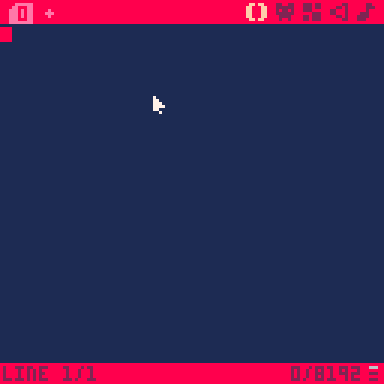
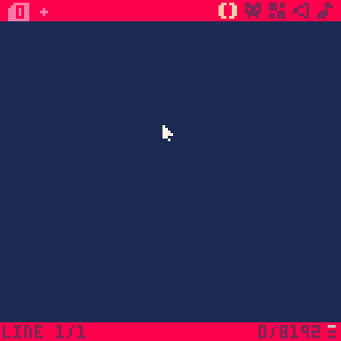
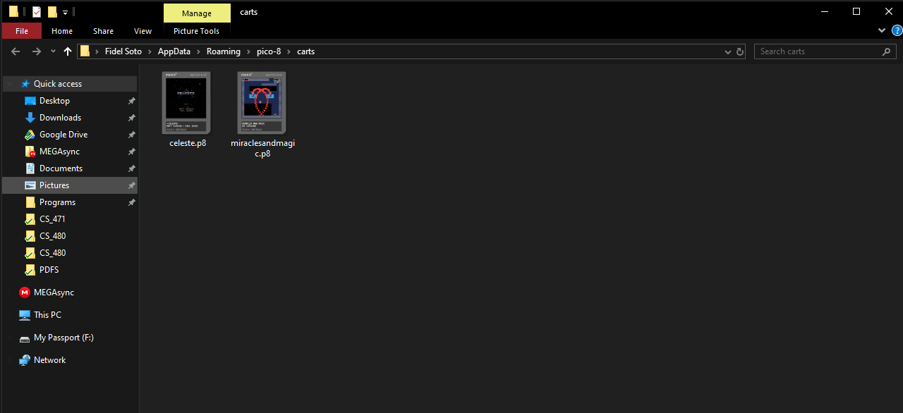

Loading a Game from the Pico-8 Carts Website
I downloaded a game onto the pico-8 directory and loaded from there. I used the pico-8 manual to learn to do this, since using my clipboard gave me issues.
Pasting Code
I copied code from a game in BBS, pasted in Pico-8, and ran it.

Hello, Fidel!
I typed the first statement everyone types when learning a new language

'Sploring the Splore menu
I ran the Splore command and looked around a couple of games. Notice that I already played and favorited a (literal) couple of games (they're good!)
Finding the .p8 file directory
I found the place where the .p8 files were stored by using the 'Folder' command. It's relatively powerful considering the imaginary console's limitations
